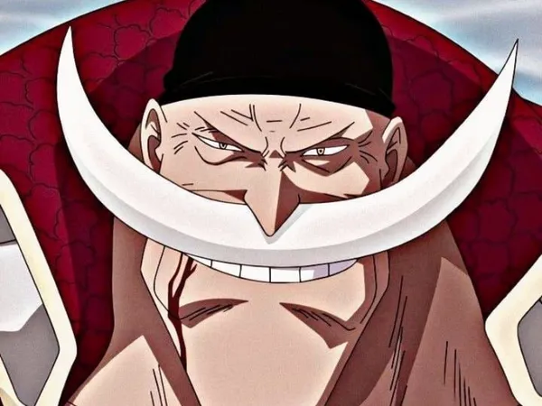

Expediente Clasificado: Sujeto 003

APODO: BARBABLANCA
ESTADO: MUERTO
| Parámetro | Información obtenida por Cipher Pol |
|---|---|
| Nombre | Edward Newgate |
| Raza | Humano |
| Estado | Fallecido |
| Edad - Estatura | 72 años - 666 cm |
| Origen | 6 de abril - Grand Line (Sphinx) |
| Afiliación | Piratas de Barbablanca |
| Ocupación | Capitán |
| Fruta del Diablo | Fruta Gura Gura |
| Haki | Conquistador avanzado, Armadura y Observación |